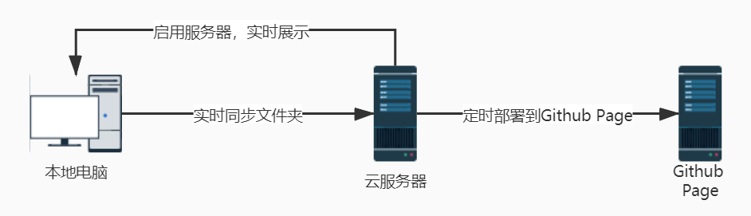
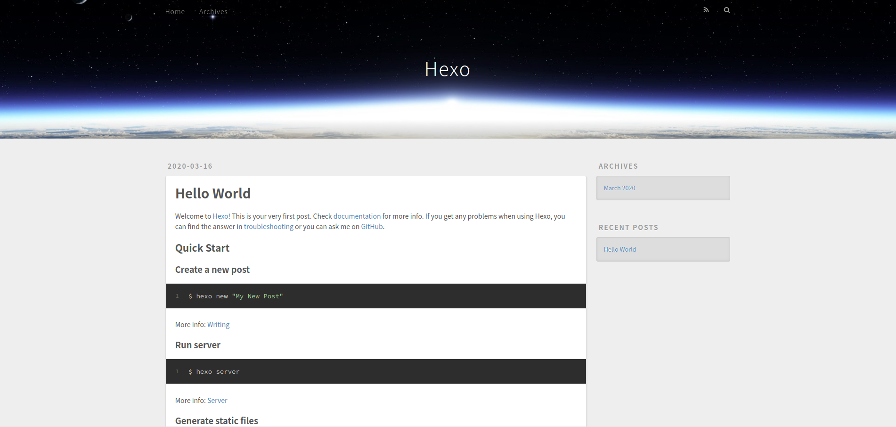
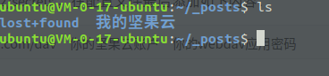

<!DOCTYPE html>
<html lang="en">
<head>
    <meta charset="utf-8">
    
    <title>借助云服务器实现hexo全自动部署 | kn0sky&#39;wiki</title>
    
    
        <meta name="keywords" content="kn0sky">
    
    <meta name="viewport" content="width=device-width, initial-scale=1, maximum-scale=1">
    <meta name="description" content="借助云服务器实现hexo全自动部署大家好，我是kn0sky，上一篇我们用hexo搭建了wiki主题个人博客，这次我们来讲讲部署hexo文章我们可以如何偷懒。不想直接把站点文件都传到github上，那自己发布hexo文章需要依次执行3条命令，懒惰的我觉得太麻烦了，于是简单写了个脚本将三条hexo命令简化成一条执行脚本命令，但发布文章还是要执行一条命令啊，还是太麻烦了，后来就在想啊，能不能一条命令也不">
<meta property="og:type" content="article">
<meta property="og:title" content="借助云服务器实现hexo全自动部署">
<meta property="og:url" content="http://kn0sky.com/wiki/%E6%8A%98%E8%85%BE%E7%AC%94%E8%AE%B0/%E5%8D%9A%E5%AE%A2%E6%90%AD%E5%BB%BA/%E5%80%9F%E5%8A%A9%E4%BA%91%E6%9C%8D%E5%8A%A1%E5%99%A8%E5%AE%9E%E7%8E%B0hexo%E5%85%A8%E8%87%AA%E5%8A%A8%E9%83%A8%E7%BD%B2/index.html">
<meta property="og:site_name" content="kn0sky&#39;wiki">
<meta property="og:description" content="借助云服务器实现hexo全自动部署大家好，我是kn0sky，上一篇我们用hexo搭建了wiki主题个人博客，这次我们来讲讲部署hexo文章我们可以如何偷懒。不想直接把站点文件都传到github上，那自己发布hexo文章需要依次执行3条命令，懒惰的我觉得太麻烦了，于是简单写了个脚本将三条hexo命令简化成一条执行脚本命令，但发布文章还是要执行一条命令啊，还是太麻烦了，后来就在想啊，能不能一条命令也不">
<meta property="og:locale" content="en_US">
<meta property="og:image" content="http://kn0sky.com/wiki/%E6%8A%98%E8%85%BE%E7%AC%94%E8%AE%B0/%E5%8D%9A%E5%AE%A2%E6%90%AD%E5%BB%BA/%E5%80%9F%E5%8A%A9%E4%BA%91%E6%9C%8D%E5%8A%A1%E5%99%A8%E5%AE%9E%E7%8E%B0hexo%E5%85%A8%E8%87%AA%E5%8A%A8%E9%83%A8%E7%BD%B2/%E5%80%9F%E5%8A%A9%E4%BA%91%E6%9C%8D%E5%8A%A1%E5%99%A8%E5%AE%9E%E7%8E%B0hexo%E5%85%A8%E8%87%AA%E5%8A%A8%E9%83%A8%E7%BD%B2/1.jpg">
<meta property="og:image" content="http://kn0sky.com/wiki/%E6%8A%98%E8%85%BE%E7%AC%94%E8%AE%B0/%E5%8D%9A%E5%AE%A2%E6%90%AD%E5%BB%BA/%E5%80%9F%E5%8A%A9%E4%BA%91%E6%9C%8D%E5%8A%A1%E5%99%A8%E5%AE%9E%E7%8E%B0hexo%E5%85%A8%E8%87%AA%E5%8A%A8%E9%83%A8%E7%BD%B2/1.jpg">
<meta property="og:image" content="http://kn0sky.com/home/kn0sky/hexo-wiki/source/_posts/%E5%8D%9A%E5%AE%A2%E7%AF%87/%E5%80%9F%E5%8A%A9%E4%BA%91%E6%9C%8D%E5%8A%A1%E5%99%A8%E5%AE%9E%E7%8E%B0hexo%E5%85%A8%E8%87%AA%E5%8A%A8%E9%83%A8%E7%BD%B2/2.png">
<meta property="og:image" content="http://kn0sky.com/wiki/%E6%8A%98%E8%85%BE%E7%AC%94%E8%AE%B0/%E5%8D%9A%E5%AE%A2%E6%90%AD%E5%BB%BA/%E5%80%9F%E5%8A%A9%E4%BA%91%E6%9C%8D%E5%8A%A1%E5%99%A8%E5%AE%9E%E7%8E%B0hexo%E5%85%A8%E8%87%AA%E5%8A%A8%E9%83%A8%E7%BD%B2/2.png">
<meta property="og:image" content="http://kn0sky.com/home/kn0sky/hexo-wiki/source/_posts/%E5%8D%9A%E5%AE%A2%E7%AF%87/%E5%80%9F%E5%8A%A9%E4%BA%91%E6%9C%8D%E5%8A%A1%E5%99%A8%E5%AE%9E%E7%8E%B0hexo%E5%85%A8%E8%87%AA%E5%8A%A8%E9%83%A8%E7%BD%B2/3.png">
<meta property="og:image" content="http://kn0sky.com/wiki/%E6%8A%98%E8%85%BE%E7%AC%94%E8%AE%B0/%E5%8D%9A%E5%AE%A2%E6%90%AD%E5%BB%BA/%E5%80%9F%E5%8A%A9%E4%BA%91%E6%9C%8D%E5%8A%A1%E5%99%A8%E5%AE%9E%E7%8E%B0hexo%E5%85%A8%E8%87%AA%E5%8A%A8%E9%83%A8%E7%BD%B2/3.png">
<meta property="article:published_time" content="2020-03-15T14:36:10.000Z">
<meta property="article:modified_time" content="2020-04-14T10:13:53.000Z">
<meta property="article:author" content="kn0sky">
<meta property="article:tag" content="kn0sky">
<meta name="twitter:card" content="summary">
<meta name="twitter:image" content="http://kn0sky.com/wiki/%E6%8A%98%E8%85%BE%E7%AC%94%E8%AE%B0/%E5%8D%9A%E5%AE%A2%E6%90%AD%E5%BB%BA/%E5%80%9F%E5%8A%A9%E4%BA%91%E6%9C%8D%E5%8A%A1%E5%99%A8%E5%AE%9E%E7%8E%B0hexo%E5%85%A8%E8%87%AA%E5%8A%A8%E9%83%A8%E7%BD%B2/%E5%80%9F%E5%8A%A9%E4%BA%91%E6%9C%8D%E5%8A%A1%E5%99%A8%E5%AE%9E%E7%8E%B0hexo%E5%85%A8%E8%87%AA%E5%8A%A8%E9%83%A8%E7%BD%B2/1.jpg">
    

    
        <link rel="alternate" href="/atom.xml" title="kn0sky&#39;wiki" type="application/atom+xml">
    

    
        <link rel="icon" href="/favicon.ico">
    

    
<link rel="stylesheet" href="/libs/font-awesome/css/font-awesome.min.css">

    
<link rel="stylesheet" href="/libs/open-sans/styles.css">

    
<link rel="stylesheet" href="/libs/source-code-pro/styles.css">


    
<link rel="stylesheet" href="/css/style.css">

    
<script src="/libs/jquery/2.1.3/jquery.min.js"></script>

    
<script src="/libs/jquery/plugins/cookie/1.4.1/jquery.cookie.js"></script>

    
    
        
<link rel="stylesheet" href="/libs/lightgallery/css/lightgallery.min.css">

    
    
        
<link rel="stylesheet" href="/libs/justified-gallery/justifiedGallery.min.css">

    
    
    
    


    
        <script async src="//busuanzi.ibruce.info/busuanzi/2.3/busuanzi.pure.mini.js"></script>
    
<meta name="generator" content="Hexo 4.2.0"></head>
</html>
<body>
    <div id="container">
        <header id="header">
    <div id="header-main" class="header-inner">
        <div class="outer">
            <a href="/" id="logo">
                <i class="logo"></i>
                <span class="site-title">kn0sky&#39;wiki</span>
            </a>
            <nav id="main-nav">
                
                    <a class="main-nav-link" href="/">首页</a>
                
                    <a class="main-nav-link" href="/archives">归档</a>
                
                    <a class="main-nav-link" href="/categories">分类</a>
                
                    <a class="main-nav-link" href="/tags">标签</a>
                
                    <a class="main-nav-link" href="/about">关于</a>
                
            </nav>
            
            <div id="search-form-wrap">

    <form class="search-form">
        <input type="text" class="ins-search-input search-form-input" placeholder="Search">
        <button type="submit" class="search-form-submit"></button>
    </form>
    <div class="ins-search">
    <div class="ins-search-mask"></div>
    <div class="ins-search-container">
        <div class="ins-input-wrapper">
            <input type="text" class="ins-search-input" placeholder="Type something...">
            <span class="ins-close ins-selectable"><i class="fa fa-times-circle"></i></span>
        </div>
        <div class="ins-section-wrapper">
            <div class="ins-section-container"></div>
        </div>
    </div>
</div>
<script>
(function (window) {
    var INSIGHT_CONFIG = {
        TRANSLATION: {
            POSTS: 'Posts',
            PAGES: 'Pages',
            CATEGORIES: 'Categories',
            TAGS: 'Tags',
            UNTITLED: '(Untitled)',
        },
        ROOT_URL: '/',
        CONTENT_URL: '/content.json',
    };
    window.INSIGHT_CONFIG = INSIGHT_CONFIG;
})(window);
</script>

<script src="/js/insight.js"></script>


</div>
        </div>
    </div>
    <div id="main-nav-mobile" class="header-sub header-inner">
        <table class="menu outer">
            <tr>
                
                    <td><a class="main-nav-link" href="/">首页</a></td>
                
                    <td><a class="main-nav-link" href="/archives">归档</a></td>
                
                    <td><a class="main-nav-link" href="/categories">分类</a></td>
                
                    <td><a class="main-nav-link" href="/tags">标签</a></td>
                
                    <td><a class="main-nav-link" href="/about">关于</a></td>
                
                <td>
                    
    <div class="search-form">
        <input type="text" class="ins-search-input search-form-input" placeholder="Search">
    </div>

                </td>
            </tr>
        </table>
    </div>
</header>

        <div class="outer">
            
            
                <aside id="sidebar">
   
        
    <div class="widget-wrap" id="categories">
        <h3 class="widget-title">
            <span>categories</span>
            &nbsp;
            <a id="allExpand" href="#">
                <i class="fa fa-angle-double-down fa-2x"></i>
            </a>
        </h3>
        
        
        
         <ul class="unstyled" id="tree"> 
                    <li class="directory">
                        <a href="#" data-role="directory">
                            <i class="fa fa-folder"></i>
                            &nbsp;
                            XCTF攻防世界WP
                        </a>
                         <ul class="unstyled" id="tree"> 
                    <li class="directory">
                        <a href="#" data-role="directory">
                            <i class="fa fa-folder"></i>
                            &nbsp;
                            新手练习区
                        </a>
                         <ul class="unstyled" id="tree"> 
                    <li class="directory">
                        <a href="#" data-role="directory">
                            <i class="fa fa-folder"></i>
                            &nbsp;
                            REVERSE
                        </a>
                         <ul class="unstyled" id="tree">  <li class="file"><a href="/wiki/XCTF%E6%94%BB%E9%98%B2%E4%B8%96%E7%95%8CWP/%E6%96%B0%E6%89%8B%E7%BB%83%E4%B9%A0%E5%8C%BA/REVERSE/re001-open-source/">open-source Write Up</a></li>  </ul> 
                    </li> 
                     </ul> 
                    </li> 
                     </ul> 
                    </li> 
                    
                    <li class="directory">
                        <a href="#" data-role="directory">
                            <i class="fa fa-folder"></i>
                            &nbsp;
                            备忘笔记
                        </a>
                         <ul class="unstyled" id="tree">  <li class="file"><a href="/wiki/%E5%A4%87%E5%BF%98%E7%AC%94%E8%AE%B0/%E5%B8%B8%E7%94%A8%E5%B7%A5%E5%85%B7%E6%B1%87%E6%80%BB/">常用工具备忘录</a></li>  </ul> 
                    </li> 
                    
                    <li class="directory">
                        <a href="#" data-role="directory">
                            <i class="fa fa-folder"></i>
                            &nbsp;
                            学习笔记
                        </a>
                         <ul class="unstyled" id="tree"> 
                    <li class="directory">
                        <a href="#" data-role="directory">
                            <i class="fa fa-folder"></i>
                            &nbsp;
                            51单片机学习笔记
                        </a>
                         <ul class="unstyled" id="tree">  <li class="file"><a href="/wiki/%E5%AD%A6%E4%B9%A0%E7%AC%94%E8%AE%B0/51%E5%8D%95%E7%89%87%E6%9C%BA%E5%AD%A6%E4%B9%A0%E7%AC%94%E8%AE%B0/51%E5%8D%95%E7%89%87%E6%9C%BA%E5%85%A5%E9%97%A801--LED%E6%B5%81%E6%B0%B4%E7%81%AF/">51单片机入门01--LED流水灯</a></li>  <li class="file"><a href="/wiki/%E5%AD%A6%E4%B9%A0%E7%AC%94%E8%AE%B0/51%E5%8D%95%E7%89%87%E6%9C%BA%E5%AD%A6%E4%B9%A0%E7%AC%94%E8%AE%B0/51%E5%8D%95%E7%89%87%E6%9C%BA%E5%85%A5%E9%97%A802--%E6%95%B0%E7%A0%81%E7%AE%A1/">51单片机入门02--数码管</a></li>  <li class="file"><a href="/wiki/%E5%AD%A6%E4%B9%A0%E7%AC%94%E8%AE%B0/51%E5%8D%95%E7%89%87%E6%9C%BA%E5%AD%A6%E4%B9%A0%E7%AC%94%E8%AE%B0/51%E5%8D%95%E7%89%87%E6%9C%BA%E5%85%A5%E9%97%A803--%E6%8C%89%E9%94%AE/">51单片机入门03--按键</a></li>  <li class="file"><a href="/wiki/%E5%AD%A6%E4%B9%A0%E7%AC%94%E8%AE%B0/51%E5%8D%95%E7%89%87%E6%9C%BA%E5%AD%A6%E4%B9%A0%E7%AC%94%E8%AE%B0/51%E5%8D%95%E7%89%87%E6%9C%BA%E5%85%A5%E9%97%A804--%E5%AE%9A%E6%97%B6&%E8%AE%A1%E6%95%B0%E5%99%A8/">51单片机入门04--定时&计数器</a></li>  </ul> 
                    </li> 
                    
                    <li class="directory">
                        <a href="#" data-role="directory">
                            <i class="fa fa-folder"></i>
                            &nbsp;
                            C++学习笔记
                        </a>
                         <ul class="unstyled" id="tree">  <li class="file"><a href="/wiki/%E5%AD%A6%E4%B9%A0%E7%AC%94%E8%AE%B0/C++%E5%AD%A6%E4%B9%A0%E7%AC%94%E8%AE%B0/C++%E8%AF%AD%E8%A8%80%E5%9F%BA%E7%A1%8001--%E5%88%9D%E8%A7%81C++/">C++基础01--初见C++</a></li>  </ul> 
                    </li> 
                    
                    <li class="directory">
                        <a href="#" data-role="directory">
                            <i class="fa fa-folder"></i>
                            &nbsp;
                            C语言学习笔记
                        </a>
                         <ul class="unstyled" id="tree">  <li class="file"><a href="/wiki/%E5%AD%A6%E4%B9%A0%E7%AC%94%E8%AE%B0/C%E8%AF%AD%E8%A8%80%E5%AD%A6%E4%B9%A0%E7%AC%94%E8%AE%B0/C%E8%AF%AD%E8%A8%80%E5%9F%BA%E7%A1%8001--%E5%88%9D%E8%A7%81C%E8%AF%AD%E8%A8%80/">C语言基础01--初见C语言</a></li>  <li class="file"><a href="/wiki/%E5%AD%A6%E4%B9%A0%E7%AC%94%E8%AE%B0/C%E8%AF%AD%E8%A8%80%E5%AD%A6%E4%B9%A0%E7%AC%94%E8%AE%B0/C%E8%AF%AD%E8%A8%80%E5%9F%BA%E7%A1%8002--%E6%9D%A1%E4%BB%B6%E8%AF%AD%E5%8F%A5/">C语言基础02--条件语句</a></li>  <li class="file"><a href="/wiki/%E5%AD%A6%E4%B9%A0%E7%AC%94%E8%AE%B0/C%E8%AF%AD%E8%A8%80%E5%AD%A6%E4%B9%A0%E7%AC%94%E8%AE%B0/C%E8%AF%AD%E8%A8%80%E5%9F%BA%E7%A1%8003--%E5%AE%8F&%E5%87%BD%E6%95%B0&%E6%95%B0%E7%BB%84/">C语言基础03--宏&函数&数组</a></li>  <li class="file"><a href="/wiki/%E5%AD%A6%E4%B9%A0%E7%AC%94%E8%AE%B0/C%E8%AF%AD%E8%A8%80%E5%AD%A6%E4%B9%A0%E7%AC%94%E8%AE%B0/C%E8%AF%AD%E8%A8%80%E5%9F%BA%E7%A1%8004--%E6%8C%87%E9%92%88/">C语言基础04--指针</a></li>  <li class="file"><a href="/wiki/%E5%AD%A6%E4%B9%A0%E7%AC%94%E8%AE%B0/C%E8%AF%AD%E8%A8%80%E5%AD%A6%E4%B9%A0%E7%AC%94%E8%AE%B0/C%E8%AF%AD%E8%A8%80%E5%9F%BA%E7%A1%8005--%E5%AD%97%E7%AC%A6%E4%B8%B2%E6%93%8D%E4%BD%9C/">C语言基础05--字符串操作</a></li>  <li class="file"><a href="/wiki/%E5%AD%A6%E4%B9%A0%E7%AC%94%E8%AE%B0/C%E8%AF%AD%E8%A8%80%E5%AD%A6%E4%B9%A0%E7%AC%94%E8%AE%B0/C%E8%AF%AD%E8%A8%80%E5%9F%BA%E7%A1%8006--%E5%AD%98%E5%82%A8%E7%B1%BB&%E5%86%85%E5%AD%98%E7%AE%A1%E7%90%86/">C语言基础06--存储类&内存管理</a></li>  <li class="file"><a href="/wiki/%E5%AD%A6%E4%B9%A0%E7%AC%94%E8%AE%B0/C%E8%AF%AD%E8%A8%80%E5%AD%A6%E4%B9%A0%E7%AC%94%E8%AE%B0/C%E8%AF%AD%E8%A8%80%E5%9F%BA%E7%A1%8007--%E6%96%87%E4%BB%B6%E6%93%8D%E4%BD%9C/">C语言基础07--文件操作</a></li>  <li class="file"><a href="/wiki/%E5%AD%A6%E4%B9%A0%E7%AC%94%E8%AE%B0/C%E8%AF%AD%E8%A8%80%E5%AD%A6%E4%B9%A0%E7%AC%94%E8%AE%B0/C%E8%AF%AD%E8%A8%80%E5%9F%BA%E7%A1%8008--%E7%BB%93%E6%9E%84%E4%BD%93/">C语言基础08--结构体</a></li>  <li class="file"><a href="/wiki/%E5%AD%A6%E4%B9%A0%E7%AC%94%E8%AE%B0/C%E8%AF%AD%E8%A8%80%E5%AD%A6%E4%B9%A0%E7%AC%94%E8%AE%B0/C%E8%AF%AD%E8%A8%80%E5%9F%BA%E7%A1%8009--C%E9%A2%84%E5%A4%84%E7%90%86%E5%99%A8%E5%92%8CC%E5%BA%93/">C语言基础09--C预处理器和C库</a></li>  </ul> 
                    </li> 
                    
                    <li class="directory">
                        <a href="#" data-role="directory">
                            <i class="fa fa-folder"></i>
                            &nbsp;
                            前端入门学习笔记
                        </a>
                         <ul class="unstyled" id="tree">  <li class="file"><a href="/wiki/%E5%AD%A6%E4%B9%A0%E7%AC%94%E8%AE%B0/%E5%89%8D%E7%AB%AF%E5%85%A5%E9%97%A8%E5%AD%A6%E4%B9%A0%E7%AC%94%E8%AE%B0/%E5%89%8D%E7%AB%AF%E5%85%A5%E9%97%A801--HTML&CSS%E5%9F%BA%E7%A1%80/">前端入门01--HTML和CSS基础</a></li>  </ul> 
                    </li> 
                    
                    <li class="directory">
                        <a href="#" data-role="directory">
                            <i class="fa fa-folder"></i>
                            &nbsp;
                            半导体物理学习笔记
                        </a>
                         <ul class="unstyled" id="tree">  <li class="file"><a href="/wiki/%E5%AD%A6%E4%B9%A0%E7%AC%94%E8%AE%B0/%E5%8D%8A%E5%AF%BC%E4%BD%93%E7%89%A9%E7%90%86%E5%AD%A6%E4%B9%A0%E7%AC%94%E8%AE%B0/%E5%8D%8A%E5%AF%BC%E4%BD%93%E7%89%A9%E7%90%8601--%E8%83%BD%E5%B8%A6%E7%90%86%E8%AE%BA/">半导体物理01--能带理论</a></li>  </ul> 
                    </li> 
                    
                    <li class="directory">
                        <a href="#" data-role="directory">
                            <i class="fa fa-folder"></i>
                            &nbsp;
                            汇编基础学习笔记
                        </a>
                         <ul class="unstyled" id="tree">  <li class="file"><a href="/wiki/%E5%AD%A6%E4%B9%A0%E7%AC%94%E8%AE%B0/%E6%B1%87%E7%BC%96%E5%9F%BA%E7%A1%80%E5%AD%A6%E4%B9%A0%E7%AC%94%E8%AE%B0/%E6%B1%87%E7%BC%96%E5%9F%BA%E7%A1%8001--%E5%9F%BA%E7%A1%80%E6%A6%82%E5%BF%B5/">汇编基础01：基础概念</a></li>  <li class="file"><a href="/wiki/%E5%AD%A6%E4%B9%A0%E7%AC%94%E8%AE%B0/%E6%B1%87%E7%BC%96%E5%9F%BA%E7%A1%80%E5%AD%A6%E4%B9%A0%E7%AC%94%E8%AE%B0/%E6%B1%87%E7%BC%96%E5%9F%BA%E7%A1%8002--%E7%AC%AC%E4%B8%80%E4%B8%AA%E7%A8%8B%E5%BA%8F/">汇编基础02：第一个程序</a></li>  <li class="file"><a href="/wiki/%E5%AD%A6%E4%B9%A0%E7%AC%94%E8%AE%B0/%E6%B1%87%E7%BC%96%E5%9F%BA%E7%A1%80%E5%AD%A6%E4%B9%A0%E7%AC%94%E8%AE%B0/%E6%B1%87%E7%BC%96%E5%9F%BA%E7%A1%8003--%E6%95%B0%E5%AD%A6%E8%BF%90%E7%AE%97&%E9%80%BB%E8%BE%91%E8%BF%90%E7%AE%97/">汇编基础03：数学运算&逻辑运算</a></li>  <li class="file"><a href="/wiki/%E5%AD%A6%E4%B9%A0%E7%AC%94%E8%AE%B0/%E6%B1%87%E7%BC%96%E5%9F%BA%E7%A1%80%E5%AD%A6%E4%B9%A0%E7%AC%94%E8%AE%B0/%E6%B1%87%E7%BC%96%E5%9F%BA%E7%A1%8004--%E5%BE%AA%E7%8E%AF/">汇编基础04：循环</a></li>  <li class="file"><a href="/wiki/%E5%AD%A6%E4%B9%A0%E7%AC%94%E8%AE%B0/%E6%B1%87%E7%BC%96%E5%9F%BA%E7%A1%80%E5%AD%A6%E4%B9%A0%E7%AC%94%E8%AE%B0/%E6%B1%87%E7%BC%96%E5%9F%BA%E7%A1%8005--%E5%A0%86%E6%A0%88/">汇编基础05：堆栈</a></li>  <li class="file"><a href="/wiki/%E5%AD%A6%E4%B9%A0%E7%AC%94%E8%AE%B0/%E6%B1%87%E7%BC%96%E5%9F%BA%E7%A1%80%E5%AD%A6%E4%B9%A0%E7%AC%94%E8%AE%B0/%E6%B1%87%E7%BC%96%E5%9F%BA%E7%A1%8006--%E6%95%B0%E6%8D%AE%E4%BC%A0%E9%80%81%E6%8C%87%E4%BB%A4/">汇编基础06：数据传送指令</a></li>  <li class="file"><a href="/wiki/%E5%AD%A6%E4%B9%A0%E7%AC%94%E8%AE%B0/%E6%B1%87%E7%BC%96%E5%9F%BA%E7%A1%80%E5%AD%A6%E4%B9%A0%E7%AC%94%E8%AE%B0/%E6%B1%87%E7%BC%96%E5%9F%BA%E7%A1%8007--%E6%AF%94%E8%BE%83%E6%8C%87%E4%BB%A4/">汇编基础07：比较指令</a></li>  <li class="file"><a href="/wiki/%E5%AD%A6%E4%B9%A0%E7%AC%94%E8%AE%B0/%E6%B1%87%E7%BC%96%E5%9F%BA%E7%A1%80%E5%AD%A6%E4%B9%A0%E7%AC%94%E8%AE%B0/%E6%B1%87%E7%BC%96%E5%9F%BA%E7%A1%8008--JCC%E6%8C%87%E4%BB%A4/">汇编基础08： JCC 转移指令</a></li>  <li class="file"><a href="/wiki/%E5%AD%A6%E4%B9%A0%E7%AC%94%E8%AE%B0/%E6%B1%87%E7%BC%96%E5%9F%BA%E7%A1%80%E5%AD%A6%E4%B9%A0%E7%AC%94%E8%AE%B0/%E6%B1%87%E7%BC%96%E5%9F%BA%E7%A1%8009--%E4%BC%A0%E9%80%81%E6%8C%87%E4%BB%A4/">汇编基础09--传送指令</a></li>  <li class="file"><a href="/wiki/%E5%AD%A6%E4%B9%A0%E7%AC%94%E8%AE%B0/%E6%B1%87%E7%BC%96%E5%9F%BA%E7%A1%80%E5%AD%A6%E4%B9%A0%E7%AC%94%E8%AE%B0/%E6%B1%87%E7%BC%96%E5%9F%BA%E7%A1%8010--%E4%BD%BF%E7%94%A8%E5%87%BD%E6%95%B0/">汇编基础10--使用函数</a></li>  <li class="file"><a href="/wiki/%E5%AD%A6%E4%B9%A0%E7%AC%94%E8%AE%B0/%E6%B1%87%E7%BC%96%E5%9F%BA%E7%A1%80%E5%AD%A6%E4%B9%A0%E7%AC%94%E8%AE%B0/%E6%B1%87%E7%BC%96%E5%9F%BA%E7%A1%8011--win32%E6%B1%87%E7%BC%96/">汇编基础11--win32汇编</a></li>  <li class="file"><a href="/wiki/%E5%AD%A6%E4%B9%A0%E7%AC%94%E8%AE%B0/%E6%B1%87%E7%BC%96%E5%9F%BA%E7%A1%80%E5%AD%A6%E4%B9%A0%E7%AC%94%E8%AE%B0/%E6%B1%87%E7%BC%96%E5%9F%BA%E7%A1%8012--%E6%95%B0%E7%BB%84%E5%92%8C%E7%BB%93%E6%9E%84%E4%BD%93/">汇编基础12--数组和结构体</a></li>  <li class="file"><a href="/wiki/%E5%AD%A6%E4%B9%A0%E7%AC%94%E8%AE%B0/%E6%B1%87%E7%BC%96%E5%9F%BA%E7%A1%80%E5%AD%A6%E4%B9%A0%E7%AC%94%E8%AE%B0/%E6%B1%87%E7%BC%96%E4%BD%9C%E4%B8%9A--%E7%94%B5%E8%AF%9D%E7%B0%BF/">汇编作业--电话簿</a></li>  <li class="file"><a href="/wiki/%E5%AD%A6%E4%B9%A0%E7%AC%94%E8%AE%B0/%E6%B1%87%E7%BC%96%E5%9F%BA%E7%A1%80%E5%AD%A6%E4%B9%A0%E7%AC%94%E8%AE%B0/%E6%B1%87%E7%BC%96%E5%9F%BA%E7%A1%8013--%E9%97%B4%E6%8E%A5%E5%AF%BB%E5%9D%80/">汇编基础13--间接寻址</a></li>  </ul> 
                    </li> 
                    
                    <li class="directory">
                        <a href="#" data-role="directory">
                            <i class="fa fa-folder"></i>
                            &nbsp;
                            王道计组书学习笔记
                        </a>
                         <ul class="unstyled" id="tree">  <li class="file"><a href="/wiki/%E5%AD%A6%E4%B9%A0%E7%AC%94%E8%AE%B0/%E7%8E%8B%E9%81%93%E8%AE%A1%E7%BB%84%E4%B9%A6%E5%AD%A6%E4%B9%A0%E7%AC%94%E8%AE%B0/%E7%8E%8B%E9%81%93%E8%AE%A1%E7%BB%84%E7%AC%94%E8%AE%B001--%E8%AE%A1%E7%AE%97%E6%9C%BA%E7%B3%BB%E7%BB%9F%E6%A6%82%E8%BF%B0/">王道计组笔记01--计算机系统概述</a></li>  </ul> 
                    </li> 
                    
                    <li class="directory">
                        <a href="#" data-role="directory">
                            <i class="fa fa-folder"></i>
                            &nbsp;
                            逆向入门学习笔记
                        </a>
                         <ul class="unstyled" id="tree">  <li class="file"><a href="/wiki/%E5%AD%A6%E4%B9%A0%E7%AC%94%E8%AE%B0/%E9%80%86%E5%90%91%E5%85%A5%E9%97%A8%E5%AD%A6%E4%B9%A0%E7%AC%94%E8%AE%B0/%E9%80%86%E5%90%91%E5%9F%BA%E7%A1%8001--%E5%88%9D%E8%A7%81%E9%80%86%E5%90%91/">逆向基础01--初见逆向</a></li>  <li class="file"><a href="/wiki/%E5%AD%A6%E4%B9%A0%E7%AC%94%E8%AE%B0/%E9%80%86%E5%90%91%E5%85%A5%E9%97%A8%E5%AD%A6%E4%B9%A0%E7%AC%94%E8%AE%B0/%E9%80%86%E5%90%91%E5%9F%BA%E7%A1%8002--%E5%88%9D%E8%AF%95%E7%A0%B4%E8%A7%A3/">逆向基础02--初试破解</a></li>  </ul> 
                    </li> 
                     </ul> 
                    </li> 
                    
                    <li class="directory">
                        <a href="#" data-role="directory">
                            <i class="fa fa-folder"></i>
                            &nbsp;
                            审计笔记
                        </a>
                         <ul class="unstyled" id="tree">  <li class="file"><a href="/wiki/%E5%AE%A1%E8%AE%A1%E7%AC%94%E8%AE%B0/PHP%E4%BB%A3%E7%A0%81%E8%B0%83%E8%AF%95%E7%8E%AF%E5%A2%83%E6%90%AD%E5%BB%BA/">PHP代码调试环境搭建</a></li>  </ul> 
                    </li> 
                    
                    <li class="directory open">
                        <a href="#" data-role="directory">
                            <i class="fa fa-folder-open"></i>
                            &nbsp;
                            折腾笔记
                        </a>
                         <ul class="unstyled" id="tree"> 
                    <li class="directory open">
                        <a href="#" data-role="directory">
                            <i class="fa fa-folder-open"></i>
                            &nbsp;
                            博客搭建
                        </a>
                         <ul class="unstyled" id="tree">  <li class="file"><a href="/wiki/%E6%8A%98%E8%85%BE%E7%AC%94%E8%AE%B0/%E5%8D%9A%E5%AE%A2%E6%90%AD%E5%BB%BA/%E4%BD%BF%E7%94%A8hexo%E6%90%AD%E5%BB%BAwiki/">使用hexo搭建个人wiki</a></li>  <li class="file active"><a href="/wiki/%E6%8A%98%E8%85%BE%E7%AC%94%E8%AE%B0/%E5%8D%9A%E5%AE%A2%E6%90%AD%E5%BB%BA/%E5%80%9F%E5%8A%A9%E4%BA%91%E6%9C%8D%E5%8A%A1%E5%99%A8%E5%AE%9E%E7%8E%B0hexo%E5%85%A8%E8%87%AA%E5%8A%A8%E9%83%A8%E7%BD%B2/">借助云服务器实现hexo全自动部署</a></li>  <li class="file"><a href="/wiki/%E6%8A%98%E8%85%BE%E7%AC%94%E8%AE%B0/%E5%8D%9A%E5%AE%A2%E6%90%AD%E5%BB%BA/hexo%E8%81%94%E5%8A%A8Typora/">hexo联动Typora</a></li>  </ul> 
                    </li> 
                    
                    <li class="directory">
                        <a href="#" data-role="directory">
                            <i class="fa fa-folder"></i>
                            &nbsp;
                            手机连接电脑
                        </a>
                         <ul class="unstyled" id="tree">  <li class="file"><a href="/wiki/%E6%8A%98%E8%85%BE%E7%AC%94%E8%AE%B0/%E6%89%8B%E6%9C%BA%E8%BF%9E%E6%8E%A5%E7%94%B5%E8%84%91/%E4%BD%BF%E7%94%A8%E6%89%8B%E6%9C%BA%E6%89%A9%E5%B1%95%E7%94%B5%E8%84%91%E5%B1%8F%E5%B9%95/">使用手机扩展电脑屏幕</a></li>  <li class="file"><a href="/wiki/%E6%8A%98%E8%85%BE%E7%AC%94%E8%AE%B0/%E6%89%8B%E6%9C%BA%E8%BF%9E%E6%8E%A5%E7%94%B5%E8%84%91/%E4%BD%BF%E7%94%A8%E7%94%B5%E8%84%91%E6%8E%A7%E5%88%B6%E6%89%8B%E6%9C%BA/">使用电脑控制手机</a></li>  </ul> 
                    </li> 
                     </ul> 
                    </li> 
                    
                    <li class="directory">
                        <a href="#" data-role="directory">
                            <i class="fa fa-folder"></i>
                            &nbsp;
                            概念笔记
                        </a>
                         <ul class="unstyled" id="tree">  <li class="file"><a href="/wiki/%E6%A6%82%E5%BF%B5%E7%AC%94%E8%AE%B0/%E5%AF%84%E5%AD%98%E5%99%A8%E9%80%BB%E8%BE%91%E7%BB%93%E6%9E%84/">寄存器逻辑结构</a></li>  <li class="file"><a href="/wiki/%E6%A6%82%E5%BF%B5%E7%AC%94%E8%AE%B0/%E5%86%85%E5%AD%98/">内存</a></li>  </ul> 
                    </li> 
                    
                    <li class="directory">
                        <a href="#" data-role="directory">
                            <i class="fa fa-folder"></i>
                            &nbsp;
                            渗透笔记
                        </a>
                         <ul class="unstyled" id="tree"> 
                    <li class="directory">
                        <a href="#" data-role="directory">
                            <i class="fa fa-folder"></i>
                            &nbsp;
                            常见服务
                        </a>
                         <ul class="unstyled" id="tree">  <li class="file"><a href="/wiki/%E6%B8%97%E9%80%8F%E7%AC%94%E8%AE%B0/%E5%B8%B8%E8%A7%81%E6%9C%8D%E5%8A%A1/%E5%B8%B8%E8%A7%81%E7%AB%AF%E5%8F%A3&%E6%BC%8F%E6%B4%9E/">常见端口号&漏洞</a></li>  </ul> 
                    </li> 
                     </ul> 
                    </li> 
                    
                    <li class="directory">
                        <a href="#" data-role="directory">
                            <i class="fa fa-folder"></i>
                            &nbsp;
                            靶机笔记
                        </a>
                         <ul class="unstyled" id="tree"> 
                    <li class="directory">
                        <a href="#" data-role="directory">
                            <i class="fa fa-folder"></i>
                            &nbsp;
                            vulnhub
                        </a>
                         <ul class="unstyled" id="tree">  <li class="file"><a href="/wiki/%E9%9D%B6%E6%9C%BA%E7%AC%94%E8%AE%B0/vulnhub/5-MeAndMyGirlfriend/">【Vulnhub】Me And My Girlfriend--Workthourgh</a></li>  <li class="file"><a href="/wiki/%E9%9D%B6%E6%9C%BA%E7%AC%94%E8%AE%B0/vulnhub/6-nightfall/">【Vulnhub】Sunset:nightfall--Workthourgh：未完成</a></li>  </ul> 
                    </li> 
                     </ul> 
                    </li> 
                     <li class="file"><a href="/wiki/test/">test</a></li>  </ul> 
    </div>
    <script>
        $(document).ready(function() {
            var iconFolderOpenClass  = 'fa-folder-open';
            var iconFolderCloseClass = 'fa-folder';
            var iconAllExpandClass = 'fa-angle-double-down';
            var iconAllPackClass = 'fa-angle-double-up';
            // Handle directory-tree expansion:
            // 左键单独展开目录
            $(document).on('click', '#categories a[data-role="directory"]', function (event) {
                event.preventDefault();

                var icon = $(this).children('.fa');
                var expanded = icon.hasClass(iconFolderOpenClass);
                var subtree = $(this).siblings('ul');
                icon.removeClass(iconFolderOpenClass).removeClass(iconFolderCloseClass);
                if (expanded) {
                    if (typeof subtree != 'undefined') {
                        subtree.slideUp({ duration: 100 });
                    }
                    icon.addClass(iconFolderCloseClass);
                } else {
                    if (typeof subtree != 'undefined') {
                        subtree.slideDown({ duration: 100 });
                    }
                    icon.addClass(iconFolderOpenClass);
                }
            });
            // 右键展开下属所有目录
            $('#categories a[data-role="directory"]').bind("contextmenu", function(event){
                event.preventDefault();
                
                var icon = $(this).children('.fa');
                var expanded = icon.hasClass(iconFolderOpenClass);
                var listNode = $(this).siblings('ul');
                var subtrees = $.merge(listNode.find('li ul'), listNode);
                var icons = $.merge(listNode.find('.fa'), icon);
                icons.removeClass(iconFolderOpenClass).removeClass(iconFolderCloseClass);
                if(expanded) {
                    subtrees.slideUp({ duration: 100 });
                    icons.addClass(iconFolderCloseClass);
                } else {
                    subtrees.slideDown({ duration: 100 });
                    icons.addClass(iconFolderOpenClass);
                }
            })
            // 展开关闭所有目录按钮
            $(document).on('click', '#allExpand', function (event) {
                event.preventDefault();
                
                var icon = $(this).children('.fa');
                var expanded = icon.hasClass(iconAllExpandClass);
                icon.removeClass(iconAllExpandClass).removeClass(iconAllPackClass);
                if(expanded) {
                    $('#sidebar .fa.fa-folder').removeClass('fa-folder').addClass('fa-folder-open')
                    $('#categories li ul').slideDown({ duration: 100 });
                    icon.addClass(iconAllPackClass);
                } else {
                    $('#sidebar .fa.fa-folder-open').removeClass('fa-folder-open').addClass('fa-folder')
                    $('#categories li ul').slideUp({ duration: 100 });
                    icon.addClass(iconAllExpandClass);
                }
            });  
        });
    </script>

    
    <div id="toTop" class="fa fa-angle-up"></div>
</aside>
            
            <section id="main"><article id="post-折腾笔记/博客搭建/借助云服务器实现hexo全自动部署" class="article article-type-post" itemscope itemprop="blogPost">
    <div class="article-inner">
        
        
            <header class="article-header">
                
                    <div class="article-meta">
                        
    <div class="article-category">
    	<i class="fa fa-folder"></i>
        <a class="article-category-link" href="/categories/%E6%8A%98%E8%85%BE%E7%AC%94%E8%AE%B0/">折腾笔记</a><i class="fa fa-angle-right"></i><a class="article-category-link" href="/categories/%E6%8A%98%E8%85%BE%E7%AC%94%E8%AE%B0/%E5%8D%9A%E5%AE%A2%E6%90%AD%E5%BB%BA/">博客搭建</a>
    </div>

                        
                        
    <div class="article-date">
        <i class="fa fa-calendar"></i>
        <a href="/wiki/%E6%8A%98%E8%85%BE%E7%AC%94%E8%AE%B0/%E5%8D%9A%E5%AE%A2%E6%90%AD%E5%BB%BA/%E5%80%9F%E5%8A%A9%E4%BA%91%E6%9C%8D%E5%8A%A1%E5%99%A8%E5%AE%9E%E7%8E%B0hexo%E5%85%A8%E8%87%AA%E5%8A%A8%E9%83%A8%E7%BD%B2/">
            <time datetime="2020-03-15T14:36:10.000Z" itemprop="datePublished">2020-03-15</time>
        </a>
    </div>


                        
                            <i class="fa fa-bar-chart"></i>
                            <span id="busuanzi_container_site_pv"><span id="busuanzi_value_page_pv"></span></span>    
                        
                        
                    </div>
                
                
    
        <h1 class="article-title" itemprop="name">
            借助云服务器实现hexo全自动部署
        </h1>
    

            </header>
        
        
        <div class="article-entry" itemprop="articleBody">
        
        
            
                <div id="toc" class="toc-article">
                <strong class="toc-title">Catalogue</strong>
                    <ol class="toc"><li class="toc-item toc-level-1"><a class="toc-link" href="#借助云服务器实现hexo全自动部署"><span class="toc-number">1.</span> <span class="toc-text">借助云服务器实现hexo全自动部署</span></a><ol class="toc-child"><li class="toc-item toc-level-2"><a class="toc-link" href="#云服务器安装Hexo"><span class="toc-number">1.1.</span> <span class="toc-text">云服务器安装Hexo</span></a><ol class="toc-child"><li class="toc-item toc-level-3"><a class="toc-link" href="#安装git和Node-JS"><span class="toc-number">1.1.1.</span> <span class="toc-text">安装git和Node.JS</span></a></li><li class="toc-item toc-level-3"><a class="toc-link" href="#安装Hexo"><span class="toc-number">1.1.2.</span> <span class="toc-text">安装Hexo</span></a></li><li class="toc-item toc-level-3"><a class="toc-link" href="#运行Hexo"><span class="toc-number">1.1.3.</span> <span class="toc-text">运行Hexo</span></a></li><li class="toc-item toc-level-3"><a class="toc-link" href="#将本地配置好的wiki移动到云服务器"><span class="toc-number">1.1.4.</span> <span class="toc-text">将本地配置好的wiki移动到云服务器</span></a></li></ol></li><li class="toc-item toc-level-2"><a class="toc-link" href="#实现到云服务器之间的文件实时同步"><span class="toc-number">1.2.</span> <span class="toc-text">实现到云服务器之间的文件实时同步</span></a><ol class="toc-child"><li class="toc-item toc-level-3"><a class="toc-link" href="#安装davfs2"><span class="toc-number">1.2.1.</span> <span class="toc-text">安装davfs2</span></a></li><li class="toc-item toc-level-3"><a class="toc-link" href="#配置-amp-挂载davfs2"><span class="toc-number">1.2.2.</span> <span class="toc-text">配置&amp;挂载davfs2</span></a></li><li class="toc-item toc-level-3"><a class="toc-link" href="#通过脚本生成新的文章模板"><span class="toc-number">1.2.3.</span> <span class="toc-text">通过脚本生成新的文章模板</span></a></li></ol></li><li class="toc-item toc-level-2"><a class="toc-link" href="#通过脚本和命令实现全自动化部署到Github-Page"><span class="toc-number">1.3.</span> <span class="toc-text">通过脚本和命令实现全自动化部署到Github Page</span></a><ol class="toc-child"><li class="toc-item toc-level-3"><a class="toc-link" href="#配置云服务器ssh秘钥连接github"><span class="toc-number">1.3.1.</span> <span class="toc-text">配置云服务器ssh秘钥连接github</span></a></li><li class="toc-item toc-level-3"><a class="toc-link" href="#一键脚本"><span class="toc-number">1.3.2.</span> <span class="toc-text">一键脚本</span></a></li><li class="toc-item toc-level-3"><a class="toc-link" href="#设置定时任务"><span class="toc-number">1.3.3.</span> <span class="toc-text">设置定时任务</span></a></li></ol></li><li class="toc-item toc-level-2"><a class="toc-link" href="#参考资料"><span class="toc-number">1.4.</span> <span class="toc-text">参考资料</span></a></li></ol></li></ol>
                </div>
            
        
        
            <h1 id="借助云服务器实现hexo全自动部署"><a href="#借助云服务器实现hexo全自动部署" class="headerlink" title="借助云服务器实现hexo全自动部署"></a>借助云服务器实现hexo全自动部署</h1><p>大家好，我是kn0sky，上一篇我们用hexo搭建了wiki主题个人博客，这次我们来讲讲部署hexo文章我们可以如何偷懒。不想直接把站点文件都传到github上，那自己发布hexo文章需要依次执行3条命令，懒惰的我觉得太麻烦了，于是简单写了个脚本将三条hexo命令简化成一条执行脚本命令，但发布文章还是要执行一条命令啊，还是太麻烦了，后来就在想啊，能不能一条命令也不用输入，完全自动发布文章呢，于是有了本文。</p>
<p>本文的实现思路如下：通过云服务器的定时任务以及和云服务器的实时同步文件来实现全自动部署工作。</p>
<p></p>
<p></p>
<p>本文内容分为如下几部分：</p>
<ul>
<li>云服务器安装hexo</li>
<li>实现与云服务器的文件实时同步</li>
<li>云服务器定时部署到github page</li>
</ul>
<h2 id="云服务器安装Hexo"><a href="#云服务器安装Hexo" class="headerlink" title="云服务器安装Hexo"></a>云服务器安装Hexo</h2><h3 id="安装git和Node-JS"><a href="#安装git和Node-JS" class="headerlink" title="安装git和Node.JS"></a>安装git和Node.JS</h3><p>首先通过ssh连接到云服务器，具体操作自行百度</p>
<p>我这里使用的云服务器系统是Ubuntu Linux系统，所以本文以Ubuntu Linux为例进行讲解</p>
<p>Ubuntu Linux默认自带git，所以我们还需要自行安装一下Node.JS：</p>
<figure class="highlight sh"><table><tr><td class="gutter"><pre><span class="line">1</span><br><span class="line">2</span><br><span class="line">3</span><br><span class="line">4</span><br><span class="line">5</span><br><span class="line">6</span><br><span class="line">7</span><br><span class="line">8</span><br></pre></td><td class="code"><pre><span class="line">$ wget https://nodejs.org/dist/v12.16.1/node-v12.16.1-linux-x64.tar.xz</span><br><span class="line">$ tar -xvf node-v12.16.1-linux-x64.tar.xz </span><br><span class="line">$ sudo mv node-v12.16.1-linux-x64 /usr/<span class="built_in">local</span>/node-v12</span><br><span class="line">$ sudo ln -s /usr/<span class="built_in">local</span>/node-v12/bin/node /bin/node</span><br><span class="line">$ sudo ln -s /usr/<span class="built_in">local</span>/node-v12/bin/npm /bin/npm</span><br><span class="line"><span class="comment"># 可使用如下命令检测node是否安装成功</span></span><br><span class="line">$ node -v</span><br><span class="line">$ npm -v</span><br></pre></td></tr></table></figure>

<p>如果该云服务器是第一次使用git，记得添加一下名称和邮箱</p>
<figure class="highlight sh"><table><tr><td class="gutter"><pre><span class="line">1</span><br><span class="line">2</span><br></pre></td><td class="code"><pre><span class="line">$ git config --global user.name <span class="string">"Your Name"</span></span><br><span class="line">$ git config --global user.email <span class="string">"email@example.com"</span></span><br></pre></td></tr></table></figure>


<h3 id="安装Hexo"><a href="#安装Hexo" class="headerlink" title="安装Hexo"></a>安装Hexo</h3><figure class="highlight sh"><table><tr><td class="gutter"><pre><span class="line">1</span><br><span class="line">2</span><br><span class="line">3</span><br><span class="line">4</span><br></pre></td><td class="code"><pre><span class="line">$ npm install -g hexo-cli</span><br><span class="line">$ sudo ln -s /usr/<span class="built_in">local</span>/node-v12/bin/hexo /bin/hexo</span><br><span class="line"><span class="comment"># 检测hexo是否安装成功</span></span><br><span class="line">$ hexo -v</span><br></pre></td></tr></table></figure>

<h3 id="运行Hexo"><a href="#运行Hexo" class="headerlink" title="运行Hexo"></a>运行Hexo</h3><p>我们需要先初始化一个hexo目录</p>
<figure class="highlight sh"><table><tr><td class="gutter"><pre><span class="line">1</span><br></pre></td><td class="code"><pre><span class="line">$ hexo init &lt;floder name&gt;</span><br></pre></td></tr></table></figure>

<p>初始化完成后，文件夹结构如下：</p>
<figure class="highlight sh"><table><tr><td class="gutter"><pre><span class="line">1</span><br><span class="line">2</span><br><span class="line">3</span><br><span class="line">4</span><br><span class="line">5</span><br><span class="line">6</span><br><span class="line">7</span><br><span class="line">8</span><br></pre></td><td class="code"><pre><span class="line">.</span><br><span class="line">├── _config.yml</span><br><span class="line">├── package.json</span><br><span class="line">├── scaffolds</span><br><span class="line">├── <span class="built_in">source</span></span><br><span class="line">|   ├── _drafts</span><br><span class="line">|   └── _posts</span><br><span class="line">└── themes</span><br></pre></td></tr></table></figure>

<p>其中<code>_config.yml</code>为站点配置文件，<code>themes</code>为主题文件目录</p>
<p>要运行hexo,在hexo的目录下使用如下命令即可：</p>
<figure class="highlight sh"><table><tr><td class="gutter"><pre><span class="line">1</span><br><span class="line">2</span><br><span class="line">3</span><br></pre></td><td class="code"><pre><span class="line">$ hexo server</span><br><span class="line"><span class="comment"># 或者</span></span><br><span class="line">$ hexo s</span><br></pre></td></tr></table></figure>

<p>启动服务器后，默认在4000端口启动web服务，此时访问<code>&lt;ip&gt;:4000</code>即可访问到当前hexo站点，此时站点里默认会有一篇快速入门的文章帮助你快速熟悉hexo的使用</p>
<p></p>
<p></p>
<p>想将自己的hexo博客设置成wiki样式，可参考我的上篇文章《使用hexo搭建wiki》进行配置</p>
<h3 id="将本地配置好的wiki移动到云服务器"><a href="#将本地配置好的wiki移动到云服务器" class="headerlink" title="将本地配置好的wiki移动到云服务器"></a>将本地配置好的wiki移动到云服务器</h3><p>将本地配置好的服务器打包，上传到云服务器，然后解压即可直接使用，有的插件可能要再次npm装一下</p>
<h2 id="实现到云服务器之间的文件实时同步"><a href="#实现到云服务器之间的文件实时同步" class="headerlink" title="实现到云服务器之间的文件实时同步"></a>实现到云服务器之间的文件实时同步</h2><p>为了方便我们写文章在本地保存完就直接同步到服务器上，我们可以想办法实现一下文件实时同步，将本地文件夹的修改实时同步到云服务器上，这里有一个现成的解决方案：使用坚果云实时同步文件夹。</p>
<p>这里我们使用<a href="https://www.jianguoyun.com/" target="_blank" rel="external nofollow noopener noreferrer">坚果云软件</a>，我们的主机上下载好坚果云软件，注册登录，建立一个同步文件夹，这里操作很无脑，就不演示了，接下来讲讲没有图形界面的Linux命令行如何同步坚果云：</p>
<p>坚果云提供<code>WebDav</code>接口，这里可以使用<code>davfs</code>工具去挂载<code>WebDav</code>目录</p>
<blockquote>
<p>WebDav:WebDAV （Web-based Distributed Authoring and Versioning） 一种基于 <a href="https://baike.baidu.com/item/HTTP" target="_blank" rel="external nofollow noopener noreferrer">HTTP</a> 1.1协议的通信协议。它扩展了HTTP 1.1，在<a href="https://baike.baidu.com/item/GET/2306180" target="_blank" rel="external nofollow noopener noreferrer">GET</a>、<a href="https://baike.baidu.com/item/POST" target="_blank" rel="external nofollow noopener noreferrer">POST</a>、<a href="https://baike.baidu.com/item/HEAD" target="_blank" rel="external nofollow noopener noreferrer">HEAD</a>等几个HTTP标准方法以外添加了一些新的方法，使应用程序可对Web Server直接读写，并支持写文件锁定(Locking)及解锁(Unlock)，还可以支持文件的<a href="https://baike.baidu.com/item/版本控制/3311252" target="_blank" rel="external nofollow noopener noreferrer">版本控制</a>。有利于用户间协同编辑和管理存储在万维网服务器文档</p>
<p>总之，就是常用于网盘的一种网络协议。</p>
</blockquote>
<blockquote>
<p>davfs:一种连接WebDav网盘的工具</p>
</blockquote>
<h3 id="安装davfs2"><a href="#安装davfs2" class="headerlink" title="安装davfs2"></a>安装davfs2</h3><figure class="highlight sh"><table><tr><td class="gutter"><pre><span class="line">1</span><br></pre></td><td class="code"><pre><span class="line">$ sudo apt install davfs2</span><br></pre></td></tr></table></figure>

<h3 id="配置-amp-挂载davfs2"><a href="#配置-amp-挂载davfs2" class="headerlink" title="配置&amp;挂载davfs2"></a>配置&amp;挂载davfs2</h3><p>编辑配置文件<code>/etc/davfs2/davfs2.conf</code>，找到如下内容将注释去掉，将0改成1</p>
<figure class="highlight sh"><table><tr><td class="gutter"><pre><span class="line">1</span><br></pre></td><td class="code"><pre><span class="line"><span class="comment"># ignore_dav_header 0</span></span><br></pre></td></tr></table></figure>

<p>编辑配置文件<code>/etc/davfs2/secrets</code>，在配置文件最后添加如下内容：</p>
<figure class="highlight plain"><table><tr><td class="gutter"><pre><span class="line">1</span><br></pre></td><td class="code"><pre><span class="line">https:&#x2F;&#x2F;dav.jianguoyun.com&#x2F;dav　你的坚果云账户　你的webdav应用密码</span><br></pre></td></tr></table></figure>

<blockquote>
<p>坚果云WebDav应用密码获取方式：</p>
<ol>
<li><a href="https://www.jianguoyun.com/" target="_blank" rel="external nofollow noopener noreferrer">坚果云官网</a>登录你的坚果云账号</li>
<li>依次点击<code>账户信息</code>—<code>安全选项</code>，即可看到添加WebDav应用的按钮</li>
<li>点击<code>添加应用</code>，名称随意输入，然后就会自动生成一个密码</li>
</ol>
</blockquote>
<p>然后进行挂载</p>
<figure class="highlight sh"><table><tr><td class="gutter"><pre><span class="line">1</span><br></pre></td><td class="code"><pre><span class="line">$ sudo  mount.davfs https://dav.jianguoyun.com/dav　你想要挂载的目录</span><br></pre></td></tr></table></figure>

<p>接下来访问该目录即可发现目录里的内容已经和我们坚果云账号创建的实时同步文件夹同步了</p>
<p></p>
<p></p>
<p>接下来，我们将我们的hexo主目录source文件下的_post目录放到我们的坚果云实时同步文件夹下，然后在云服务器软链接（<code>ln -s</code>）到云服务器hexo目录的该位置即可，过于简单就不演示了</p>
<p>到此为止，我们在本地写完文章保存后，云服务器会自动同步文章，接下来在云服务器后台启动<code>hexo s</code>即可实时展示博客更新的内容了：</p>
<figure class="highlight sh"><table><tr><td class="gutter"><pre><span class="line">1</span><br><span class="line">2</span><br></pre></td><td class="code"><pre><span class="line">$ <span class="built_in">cd</span> 你的hexo的目录</span><br><span class="line">$ nohup /bin/hexo server &gt;&gt; ~/hexo.log 2&gt;&amp;1 &amp;</span><br></pre></td></tr></table></figure>

<blockquote>
<p>命令含义详见参考资料</p>
</blockquote>
<h3 id="通过脚本生成新的文章模板"><a href="#通过脚本生成新的文章模板" class="headerlink" title="通过脚本生成新的文章模板"></a>通过脚本生成新的文章模板</h3><p>每次创建新的文章都需要通过命令<code>hexo new name</code>进行，hexo程序为我们生成一个文章模板，但是如果我想只在远程服务器上安装hexo，不想在本地安装hexo呢，这里我们通过一个脚本来实现<code>hexo new</code>的功能，这样即使本地没有hexo，也能写hexo的文章，这里直接给出代码了：</p>
<figure class="highlight python"><table><tr><td class="gutter"><pre><span class="line">1</span><br><span class="line">2</span><br><span class="line">3</span><br><span class="line">4</span><br><span class="line">5</span><br><span class="line">6</span><br><span class="line">7</span><br><span class="line">8</span><br><span class="line">9</span><br><span class="line">10</span><br><span class="line">11</span><br><span class="line">12</span><br><span class="line">13</span><br><span class="line">14</span><br><span class="line">15</span><br><span class="line">16</span><br><span class="line">17</span><br><span class="line">18</span><br><span class="line">19</span><br><span class="line">20</span><br><span class="line">21</span><br><span class="line">22</span><br><span class="line">23</span><br><span class="line">24</span><br><span class="line">25</span><br><span class="line">26</span><br><span class="line">27</span><br><span class="line">28</span><br><span class="line">29</span><br><span class="line">30</span><br><span class="line">31</span><br><span class="line">32</span><br><span class="line">33</span><br><span class="line">34</span><br><span class="line">35</span><br><span class="line">36</span><br></pre></td><td class="code"><pre><span class="line"><span class="comment">#!/usr/bin/python</span></span><br><span class="line"><span class="keyword">import</span> sys</span><br><span class="line"><span class="keyword">import</span> time</span><br><span class="line"><span class="keyword">import</span> os</span><br><span class="line"></span><br><span class="line"></span><br><span class="line"><span class="keyword">if</span> <span class="keyword">not</span> sys.argv[<span class="number">1</span>]:</span><br><span class="line">    print(<span class="string">"请输入文章标题"</span>)</span><br><span class="line">    print(<span class="string">"例如：python hexonew.py title"</span>)</span><br><span class="line">    sys.exit()</span><br><span class="line"></span><br><span class="line">title = sys.argv[<span class="number">1</span>]</span><br><span class="line">time = time.strftime(<span class="string">"%Y-%m-%d %H:%M:%S"</span>,time.localtime())</span><br><span class="line"></span><br><span class="line">header = <span class="string">f"""</span></span><br><span class="line"><span class="string">---</span></span><br><span class="line"><span class="string">title: <span class="subst">&#123;title&#125;</span> </span></span><br><span class="line"><span class="string">toc: true</span></span><br><span class="line"><span class="string">date: <span class="subst">&#123;time&#125;</span></span></span><br><span class="line"><span class="string">tags:</span></span><br><span class="line"><span class="string">categories:</span></span><br><span class="line"><span class="string">---</span></span><br><span class="line"><span class="string">    """</span></span><br><span class="line"></span><br><span class="line">footer = <span class="string">"""</span></span><br><span class="line"><span class="string">## 参考资料</span></span><br><span class="line"><span class="string"></span></span><br><span class="line"><span class="string">&gt; - []()</span></span><br><span class="line"><span class="string">&gt; - []()</span></span><br><span class="line"><span class="string">"""</span></span><br><span class="line"></span><br><span class="line">text = header + <span class="string">'\n'</span> + footer</span><br><span class="line">url = os.getcwd() + <span class="string">'/'</span> + title + <span class="string">'.md'</span></span><br><span class="line"></span><br><span class="line"><span class="keyword">with</span> open(url,<span class="string">'w'</span>) <span class="keyword">as</span> f:</span><br><span class="line">    f.write(text)</span><br></pre></td></tr></table></figure>


<h2 id="通过脚本和命令实现全自动化部署到Github-Page"><a href="#通过脚本和命令实现全自动化部署到Github-Page" class="headerlink" title="通过脚本和命令实现全自动化部署到Github Page"></a>通过脚本和命令实现全自动化部署到Github Page</h2><p>为了全自动部署到Github Page，我们可以使用Linux的定时任务，比如每天晚上12点进行一次部署，部署的命令我们写成脚本方便一键执行，这样一来，我们只需要写完内容，然后保存，就能全自动部署到我们的博客上了，而且我们可以在任何机器上写文章，甚至不需要安装任何环境，非常方便。</p>
<h3 id="配置云服务器ssh秘钥连接github"><a href="#配置云服务器ssh秘钥连接github" class="headerlink" title="配置云服务器ssh秘钥连接github"></a>配置云服务器ssh秘钥连接github</h3><p>生成ssh秘钥</p>
<figure class="highlight sh"><table><tr><td class="gutter"><pre><span class="line">1</span><br></pre></td><td class="code"><pre><span class="line">$ ssh-keygen -t rsa -C <span class="string">"github邮箱账号"</span></span><br></pre></td></tr></table></figure>

<p>找到生成的秘钥，将公钥内容复制，在github上<code>个人设置</code>–<code>SSH and GPG keys</code>–<code>New SSH key</code>添加秘钥</p>
<p>添加完秘钥可使用如下命令测试:</p>
<figure class="highlight sh"><table><tr><td class="gutter"><pre><span class="line">1</span><br></pre></td><td class="code"><pre><span class="line">$ ssh -T git@github.com</span><br></pre></td></tr></table></figure>

<blockquote>
<p>这里我遇到了一个错误：<a href="mailto:git@github.com" rel="external nofollow noopener noreferrer" target="_blank">git@github.com</a>: Permission denied (publickey)，解决方案我放在参考资料里了。</p>
</blockquote>
<p>连接成功的话，会返回类似如下字样：</p>
<figure class="highlight plain"><table><tr><td class="gutter"><pre><span class="line">1</span><br></pre></td><td class="code"><pre><span class="line">Hi kn0sky! You&#39;ve successfully authenticated, but GitHub does not provide shell access.</span><br></pre></td></tr></table></figure>

<p>此时我们到hexo主目录使用一下<code>hexo d</code>命令试一试，此时我们无需输入账号密码即可成功部署</p>
<h3 id="一键脚本"><a href="#一键脚本" class="headerlink" title="一键脚本"></a>一键脚本</h3><p>使用一键部署脚本便于定时任务的设置，这里使用shell脚本进行部署</p>
<p>不知道什么原因，云服务器的<code>hexo s</code>启动服务器不会因为坚果云同步目录的变更而更新内容，所以这里也定时重启好了</p>
<p>PS：目录地址需要根据自己的情况进行修改</p>
<p>重启脚本：</p>
<figure class="highlight bash"><table><tr><td class="gutter"><pre><span class="line">1</span><br><span class="line">2</span><br><span class="line">3</span><br><span class="line">4</span><br><span class="line">5</span><br><span class="line">6</span><br><span class="line">7</span><br><span class="line">8</span><br><span class="line">9</span><br><span class="line">10</span><br><span class="line">11</span><br></pre></td><td class="code"><pre><span class="line"><span class="meta">#!/bin/bash</span></span><br><span class="line"><span class="built_in">cd</span> ~/hexo-wiki</span><br><span class="line">num=`ps -elf | grep hexo | grep -v grep | wc -l`</span><br><span class="line"><span class="keyword">if</span> [ <span class="variable">$&#123;num&#125;</span> -ne 0 ];</span><br><span class="line"><span class="keyword">then</span></span><br><span class="line">	ps -elf | grep hexo | grep -v grep | awk <span class="string">'&#123;print $4&#125;'</span> | xargs <span class="built_in">kill</span> -9</span><br><span class="line">	<span class="built_in">echo</span> <span class="string">"[+]已杀死进程"</span> &gt;&gt; ~/hexo.log</span><br><span class="line"><span class="keyword">fi</span></span><br><span class="line"><span class="built_in">echo</span> <span class="string">"--------------"</span> &gt;&gt; ~/hexo.log</span><br><span class="line"><span class="built_in">echo</span> `date -d now` &gt;&gt; ~/hexo.log</span><br><span class="line">nohup /bin/hexo server -p 30808 &gt;&gt; ~/hexo.log 2&gt;&amp;1 &amp;</span><br></pre></td></tr></table></figure>

<p>部署脚本：</p>
<figure class="highlight bash"><table><tr><td class="gutter"><pre><span class="line">1</span><br><span class="line">2</span><br><span class="line">3</span><br><span class="line">4</span><br><span class="line">5</span><br><span class="line">6</span><br></pre></td><td class="code"><pre><span class="line"><span class="meta">#!/bin/bash</span></span><br><span class="line"><span class="built_in">cd</span> ~/hexo-wiki</span><br><span class="line">nohup hexo clean &amp;&amp; hexo g &amp;&amp; hexo d &gt;&gt; ~/crontab_script/hexo_auto_depoly.log 2&gt;&amp;1 &amp;</span><br><span class="line"><span class="built_in">echo</span> <span class="string">'-----------------------'</span></span><br><span class="line"><span class="built_in">echo</span> `date -d <span class="string">'now'</span>` &gt;&gt; ~/crontab_script/blog_auto_deploy.log</span><br><span class="line"><span class="built_in">echo</span> <span class="string">"[+]完成部署！"</span> &gt;&gt; ~/crontab_script/blog_auto_deploy.log</span><br></pre></td></tr></table></figure>

<p>这里使用git进行自动部署，git会自动检测提交的内容同上次提交相比是否有变更，如果有，就部署，反之，不部署。</p>
<h3 id="设置定时任务"><a href="#设置定时任务" class="headerlink" title="设置定时任务"></a>设置定时任务</h3><p>使用<code>crontab</code>工具设置定时任务，使用如下命令进入编辑页面</p>
<figure class="highlight sh"><table><tr><td class="gutter"><pre><span class="line">1</span><br></pre></td><td class="code"><pre><span class="line">$ crontab -e</span><br></pre></td></tr></table></figure>

<p>在配置的最底下添加如下内容：</p>
<figure class="highlight sh"><table><tr><td class="gutter"><pre><span class="line">1</span><br><span class="line">2</span><br><span class="line">3</span><br><span class="line">4</span><br></pre></td><td class="code"><pre><span class="line"><span class="comment"># 每天9点12分的时候运行部署脚本</span></span><br><span class="line">12       9       *       *       *       bash ~/crontab_script/blog_auto_deploy.sh</span><br><span class="line"><span class="comment"># 每15分钟运行一次hexo 服务重启脚本</span></span><br><span class="line">*/15    *       *       *       *       bash ~/crontab_script/blog_auto_server.sh</span><br></pre></td></tr></table></figure>

<p>到此，基本实现hexo全自动部署功能！</p>
<p>希望对读完的你有所帮助。</p>
<h2 id="参考资料"><a href="#参考资料" class="headerlink" title="参考资料"></a>参考资料</h2><blockquote>
<ul>
<li><a href="[https://kn0sky.com/wiki/%E5%8D%9A%E5%AE%A2%E7%AF%87/%E4%BD%BF%E7%94%A8hexo%E6%90%AD%E5%BB%BAwiki/](https://kn0sky.com/wiki/博客篇/使用hexo搭建wiki/)">使用hexo搭建个人wiki</a></li>
<li><a href="https://ywnz.com/linuxjc/3362.html" target="_blank" rel="external nofollow noopener noreferrer">备份Linux操作系统的数据到坚果云的方法</a></li>
<li><a href="https://cloud.tencent.com/developer/labs/lab/10040" target="_blank" rel="external nofollow noopener noreferrer">搭建 Node.js 环境</a></li>
<li><a href="https://www.cnblogs.com/zhenghongxin/p/7029173.html" target="_blank" rel="external nofollow noopener noreferrer">linux shell中”2&gt;&amp;1”含义</a></li>
<li><a href="https://www.cnblogs.com/baby123/p/6477429.html" target="_blank" rel="external nofollow noopener noreferrer">nohup和&amp;后台运行，进程查看及终止</a></li>
<li><a href="https://blog.csdn.net/qq_32786873/article/details/80947195" target="_blank" rel="external nofollow noopener noreferrer">git@github.com: Permission denied (publickey)</a></li>
<li><a href="https://www.runoob.com/linux/linux-comm-crontab.html" target="_blank" rel="external nofollow noopener noreferrer">Linux crontab 命令</a></li>
</ul>
</blockquote>

            </div>
        
        <footer class="article-footer">
        </footer>
    </div>
</article>


    
<nav id="article-nav">
    
        <a href="/wiki/%E5%AD%A6%E4%B9%A0%E7%AC%94%E8%AE%B0/%E6%B1%87%E7%BC%96%E5%9F%BA%E7%A1%80%E5%AD%A6%E4%B9%A0%E7%AC%94%E8%AE%B0/%E6%B1%87%E7%BC%96%E5%9F%BA%E7%A1%8001--%E5%9F%BA%E7%A1%80%E6%A6%82%E5%BF%B5/" id="article-nav-newer" class="article-nav-link-wrap">
            <strong class="article-nav-caption">Newer</strong>
            <div class="article-nav-title">
                
                    汇编基础01：基础概念
                
            </div>
        </a>
    
    
        <a href="/wiki/%E6%8A%98%E8%85%BE%E7%AC%94%E8%AE%B0/%E6%89%8B%E6%9C%BA%E8%BF%9E%E6%8E%A5%E7%94%B5%E8%84%91/%E4%BD%BF%E7%94%A8%E6%89%8B%E6%9C%BA%E6%89%A9%E5%B1%95%E7%94%B5%E8%84%91%E5%B1%8F%E5%B9%95/" id="article-nav-older" class="article-nav-link-wrap">
            <strong class="article-nav-caption">Older</strong>
            <div class="article-nav-title">使用手机扩展电脑屏幕</div>
        </a>
    
</nav>


    
    


<!-- baidu url auto push script -->
<script type="text/javascript">
    !function(){var e=/([http|https]:\/\/[a-zA-Z0-9\_\.]+\.baidu\.com)/gi,r=window.location.href,o=document.referrer;if(!e.test(r)){var n="//api.share.baidu.com/s.gif";o?(n+="?r="+encodeURIComponent(document.referrer),r&&(n+="&l="+r)):r&&(n+="?l="+r);var t=new Image;t.src=n}}(window);
</script>     
</section>
        </div>
        <footer id="footer">
    <div class="outer">
        <div id="footer-info" class="inner">
            kn0sky &copy; 2020 
            <a rel="external nofollow noopener noreferrer" href="http://creativecommons.org/licenses/by-nc-nd/4.0/" target="_blank"></a>
            <br> Powered by <a href="http://hexo.io/" target="_blank" rel="external nofollow noopener noreferrer">Hexo</a>. Theme - <a href="https://github.com/zthxxx/hexo-theme-Wikitten" target="_blank" rel="external nofollow noopener noreferrer">wikitten</a>
            
                <br>
                <span id="busuanzi_container_site_pv"><i class="fa fa-eye"></i> <span id="busuanzi_value_site_pv"></span></span>
                &nbsp;|&nbsp;
                <span id="busuanzi_container_site_pv"><i class="fa fa-user"></i> <span id="busuanzi_value_site_uv"></span></span>
            
        </div>
    </div>
</footer>

        

    
        
<script src="/libs/lightgallery/js/lightgallery.min.js"></script>

        
<script src="/libs/lightgallery/js/lg-thumbnail.min.js"></script>

        
<script src="/libs/lightgallery/js/lg-pager.min.js"></script>

        
<script src="/libs/lightgallery/js/lg-autoplay.min.js"></script>

        
<script src="/libs/lightgallery/js/lg-fullscreen.min.js"></script>

        
<script src="/libs/lightgallery/js/lg-zoom.min.js"></script>

        
<script src="/libs/lightgallery/js/lg-hash.min.js"></script>

        
<script src="/libs/lightgallery/js/lg-share.min.js"></script>

        
<script src="/libs/lightgallery/js/lg-video.min.js"></script>

    
    
        
<script src="/libs/justified-gallery/jquery.justifiedGallery.min.js"></script>

    
    
        <script type="text/x-mathjax-config">
    MathJax.Hub.Config({
        tex2jax: {
            inlineMath: [ ["$","$"], ["\\(","\\)"] ],
            skipTags: ['script', 'noscript', 'style', 'textarea', 'pre', 'code'],
            processEscapes: true,
            TeX: {
                equationNumbers: {
                  autoNumber: 'AMS'
                }
            }
        }
    });
    MathJax.Hub.Queue(function() {
        var all = MathJax.Hub.getAllJax();
        for (var i = 0; i < all.length; ++i)
            all[i].SourceElement().parentNode.className += ' has-jax';
    });
</script>
<script async src="//cdnjs.cloudflare.com/ajax/libs/mathjax/2.7.1/MathJax.js?config=TeX-AMS-MML_HTMLorMML"></script>
    


<!-- Custom Scripts -->

<script src="/js/main.js"></script>


    </div>
</body>
